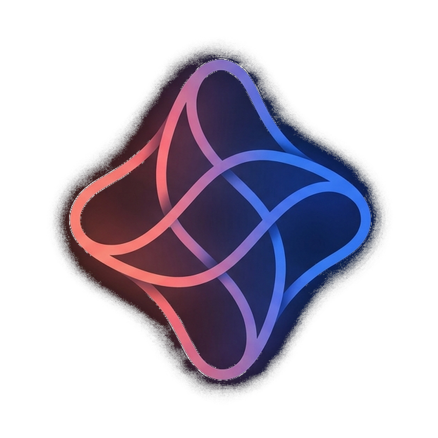

Windows
Verifica ultima versione…
Scarica per Windows
Il tuo assistente AI personale, sul tuo PC.
Parla o scrivi, Orion capisce e agisce: risponde, ricorda il contesto e si collega ai servizi che usi già (Google, GitHub, Xbox e altri) per fare cose vere, non solo chiacchierare.
Verifica ultima versione…
Scarica per WindowsIn sviluppo
In sviluppo
Dopo l'installazione puoi passare al canale Beta in qualsiasi momento dalle Impostazioni dell'app, per provare le novità prima che diventino stabili.